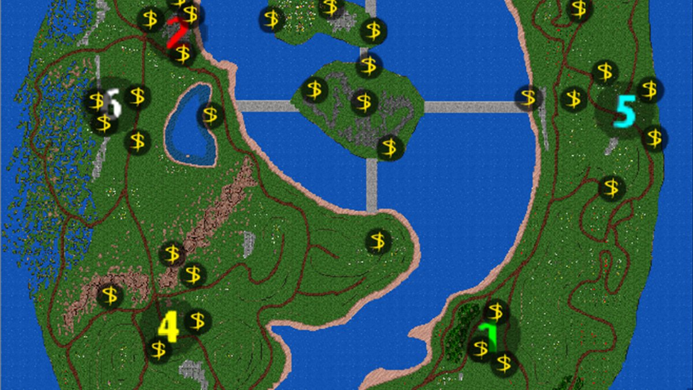
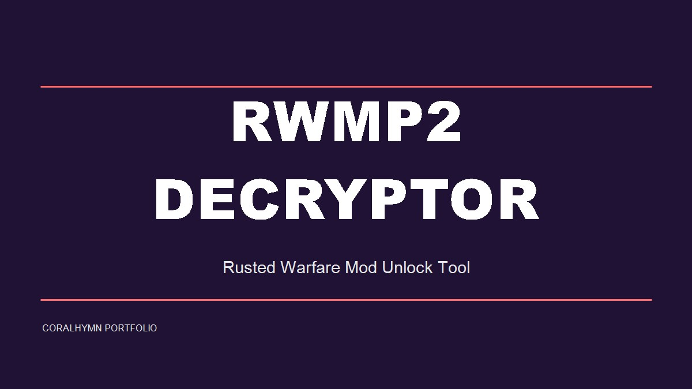
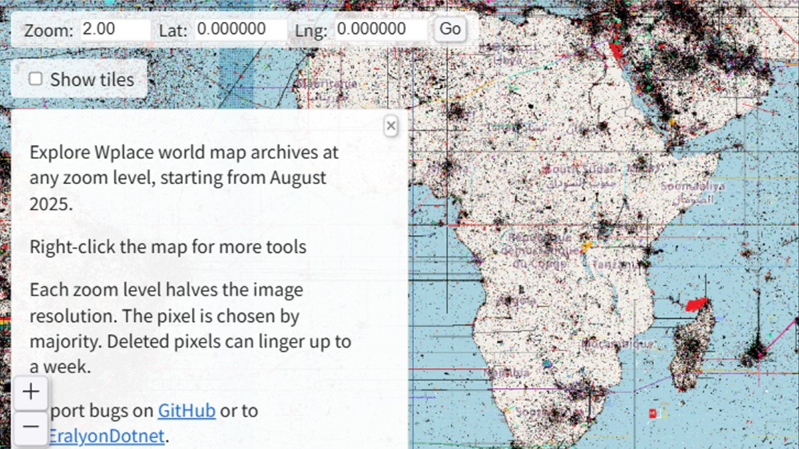
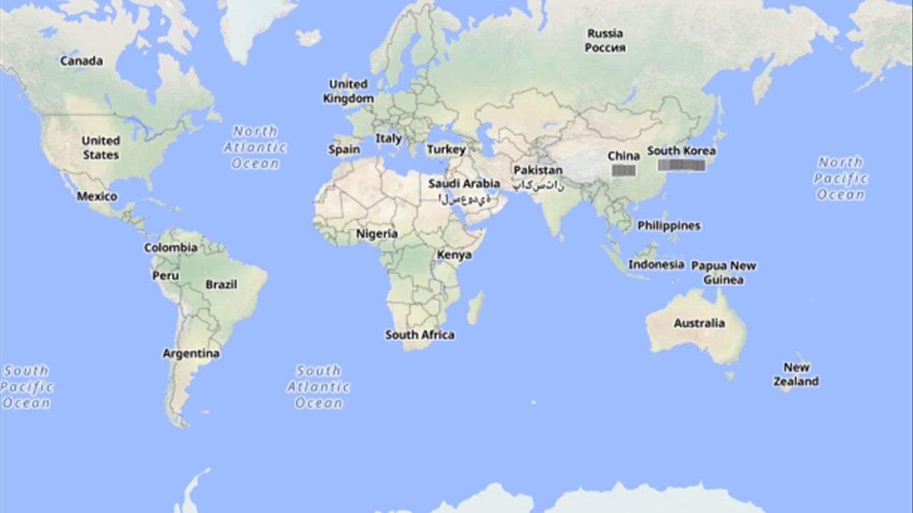
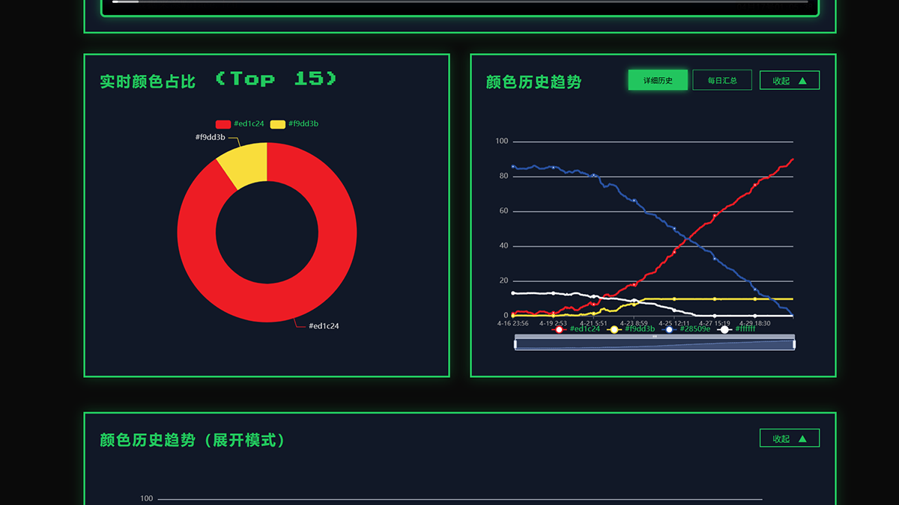

作品集
这里展示我的游戏 Mod、开发工具、数据分析与创意项目。
点击作品卡片可查看详细介绍。

工具 · Python
Clash-Gate — 节点端口分配器
为 Clash Verge 的不同订阅节点分配独立本地端口，支持多订阅隔离、端口测速与访问日志。
AI 工具 · TypeScript
CosBox — 状态驱动叙事客户端
面向 AI 角色扮演的结构化状态客户端，角色状态、衣柜、地点与日程均以版本快照管理。

游戏 Mod · 铁锈战争
Pacific-Abyss — 深海大洋模组
铁锈战争深海主题模组，包含海军、空军、装甲单位与原创地图，支持 PC 与 Android。

像素设计 · Web
Pixel-Master — 像素画转换与绘画
Wplace 像素画转换与在线绘画工具，支持多种抖动算法、图层、蒙版与 4K 性能优化。

工具 · Python / Web
RWMP2_Decryptor — 模组解密器
铁锈战争 RWMP2 加密模组解锁工具，支持 GUI、WebUI 与纯 HTML 在线使用。

浏览器扩展 · JS
WP-helrer — Wplace 截图扩展
在 wplace.live 地图上快速截图，支持实时画面与任意历史日期回溯。

数据分析 · Web
Wplace_AnalyticsPro — 数据分析工具
WPlace 联盟/玩家排行榜、搜索、热力图可视化与数据采集器。

监控机器人 · Python
wplace Discord Bot — 像素监控机器人
实时监控 Wplace 像素变化并通过 Discord 通知，支持历史截图与 21 个管理命令。

数据监控 · Python / Web
wplace-WebMonitor — 区域监控系统
wplace.live 区域像素监控，异步抓取瓦片、统计颜色占比并提供 ECharts 仪表板。

工具 · Python
ZipCloak — ZIP 文件混淆工具
对 ZIP 中的指定类型文件进行混淆，使其被系统识别为文件夹，支持多语言与恢复模式。

游戏工具 · Python + YOLO
rocom-helper — 洛克王国助手
基于 DD 内核虚拟驱动的自动化工具，支持自动点击、战斗辅助与 YOLO26 AI 视觉捉宠。